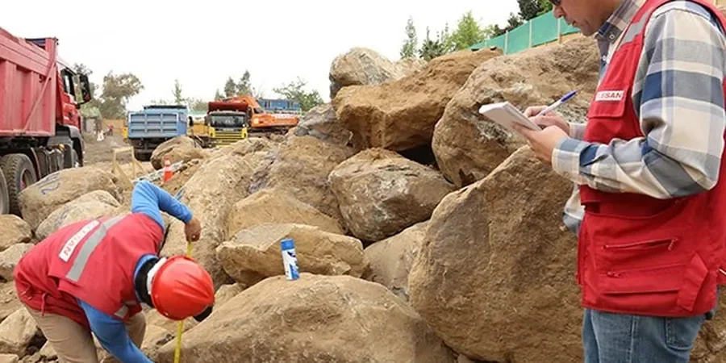

Our Manchester office delivers comprehensive geotechnical services across the North West, from site characterization and foundation design to subsurface investigation and construction monitoring. We provide code-compliant reports and practical solutions for residential, commercial, and infrastructure projects. Our approach integrates local geological knowledge with advanced techniques like undisturbed sampling to ensure reliable ground models. Whether for new developments or brownfield reclamation, we support every project phase with calibrated equipment and experienced engineers. We coordinate closely with local contractors and authorities to meet regulatory requirements and project timelines efficiently.

Scope of work in Manchester
Working video
Critical ground factors in Manchester
Our team brings consolidated regional experience across Manchester's diverse ground conditions, from glacial till in the city centre to alluvial deposits along the Mersey valley. We operate a calibrated laboratory for index and strength testing, and our field equipment includes dynamic probing and CPT rigs for efficient profiling. We maintain strong relationships with local contractors and planning authorities, ensuring smooth project delivery. Our reports are code-compliant and tailored to the specific needs of each site, incorporating advanced techniques like HVSR microtremor surveys for dynamic site response where required.
Our services
Quick answers
What typical ground conditions are found in Manchester city centre?
Manchester city centre is underlain by glacial till (boulder clay) over Triassic sandstone. The till is stiff, often with cobbles and boulders, and can be variable in thickness. Groundwater is generally deep in the sandstone but can be shallow in made ground or alluvial deposits near the rivers. Historical industrial fill is common in areas like the Northern Quarter and Castlefield, requiring careful geotechnical and environmental assessment.
How does the proximity to the Manchester Ship Canal affect foundation design?
The Ship Canal and its associated waterways can influence groundwater levels and flow patterns, especially in granular soils and shallow bedrock. Sites near the canal may require dewatering or groundwater control measures during excavation. Additionally, the canal's history of industrial use means made ground and potential contamination are common, requiring integrated geotechnical and geoenvironmental investigation.
What geotechnical standards apply to projects in Manchester?
All geotechnical design in the UK follows Eurocode 7 (EN 1997) and the relevant British Standards (BS 5930, BS 1377). For piling, we also refer to the ICE Specification for Piling. Local planning authorities may require additional guidance from the NHBC for residential projects or the Highways Agency for infrastructure. Our reports always comply with these codes and are submitted in AGS format.
What are common challenges for residential developments in Manchester's suburbs?
Common challenges include variable glacial till with boulders affecting trenching and piling, shallow groundwater in valley areas such as Didsbury or Chorlton, and made ground from former industrial sites in places like Salford. Shrink-swell potential in clay tills and the presence of peat in low-lying areas (e.g., parts of Wythenshawe) also require careful foundation design. We address these through targeted boreholes and laboratory testing.